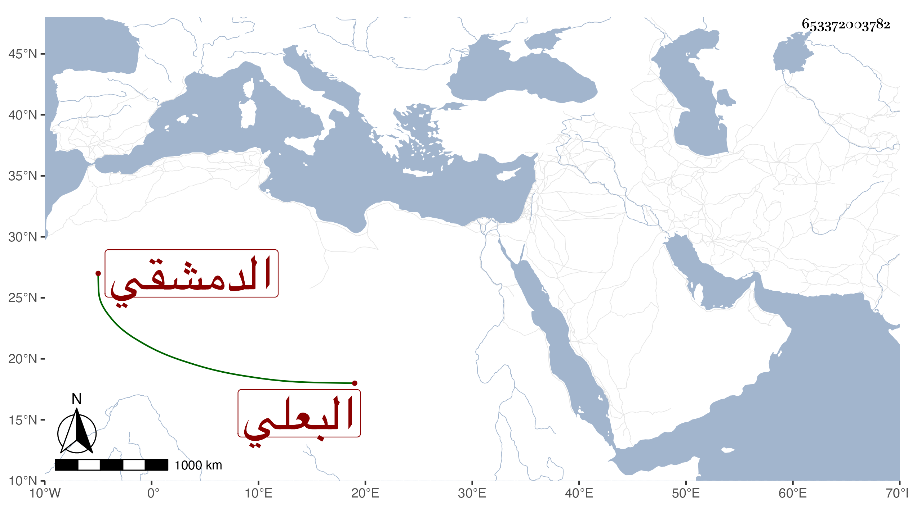

0902Sakhawi.DawLamic.ITO20230111-ara1.EIS1600.653372003782
Biography ID: 653372003782
57
اي ملك ابنة إبراهيم ابن خليل بن عبد الله بن محمود بن يوسف بن تمام أم الخير ابنة البرهان البعلي ثم الدمشقي أخت الجمال عبد الله الحافظ وعائشة وتعرف بابنة الشرائحي سمعت بأفادة أخيها ومعه الكثير من ابن أميلة ومن بعده بحيث سمعت مع شيخنا ومن مسموعها من المحب الصامت والجمال يوسف بن محمد بن الصيرفي المسلسل ومن يوسف بن الحبال جزء المناديلي مع ما بآخره وأجاز لها ابن الجوخي وابن السيرجي وأحمد بن عبد الكريم البعلي وابن الهمل وابن قواليح والصلاح بن ابي عمر وزينب ابنة قاسم وآخرون وحدثت مع أخيها وبمفردها سمع منها الفضلاء كالحافظ ابن موسى ومعه الابي وكذا سمع منها شيخنا كما ذكره في إنبائه وأرخ وفاتها فيه في ربيع الآخر وأرخها غيره في جمادى الأولى سنة خمس عشرة .
